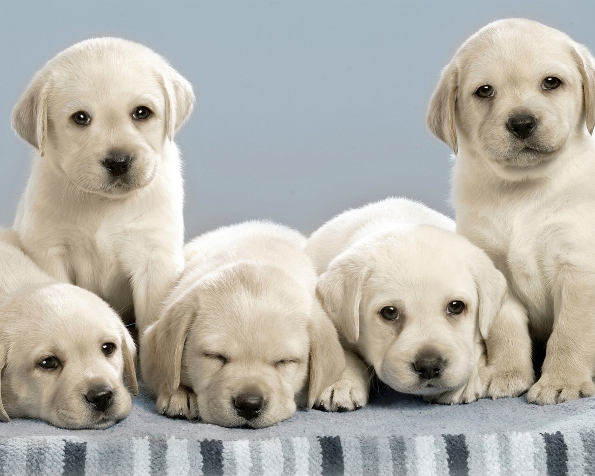

You Want a Puppy?
Have you decided to get a puppy of your very own? Congratulations! Bringing a new dog into your home will change your life forever. Puppies are definitely a lot of work, but they also come with a variety of benefits. For some examples take a look at the table below.
| Reasons to Get a Puppy | ||
|---|---|---|
| They Increase Happiness | They Help You Exercise | They Motivate You to Get Up |
| They Love You | They Ignore Your Mistakes | They Will Always Be There |
Puppies are great fun but also a great responsibility. So you must be very sure of your decision to purchase one. There is a lot of time, money and commitment that goes into caring for a dog, but dogs that are well cared for often become a beloved member of the family. They're even a lot like kids. For example: When a puppy is first born, 90 percent of their life is spent sleeping while the other 10 percent is spent eating. Since a lot of important development and growth happens for the pup during this time, it is important that they get their rest.
 |
 |
|---|
Fun Fact: There are 70,000 puppies and kittens born in the U.S. every day, according to the Humane Society Animal League for Life. Considering there's only about 10,000 humans born in the U.S. per year, you can give each newborn baby at least one puppy as a birthday gift!